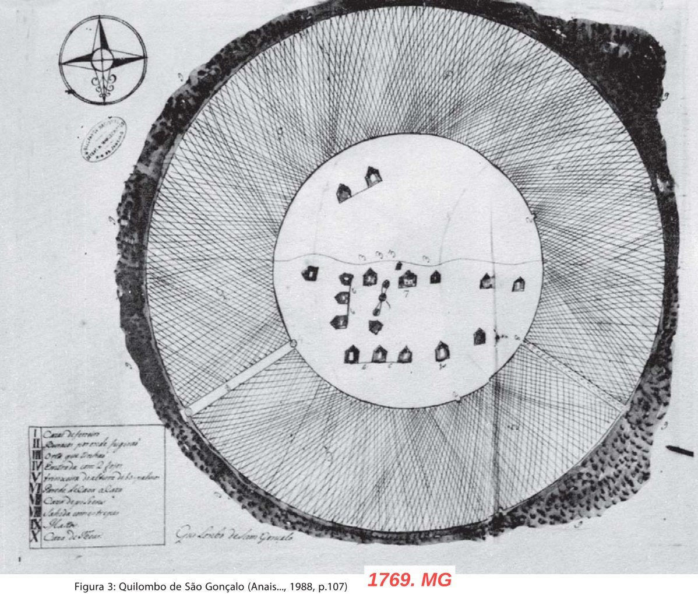
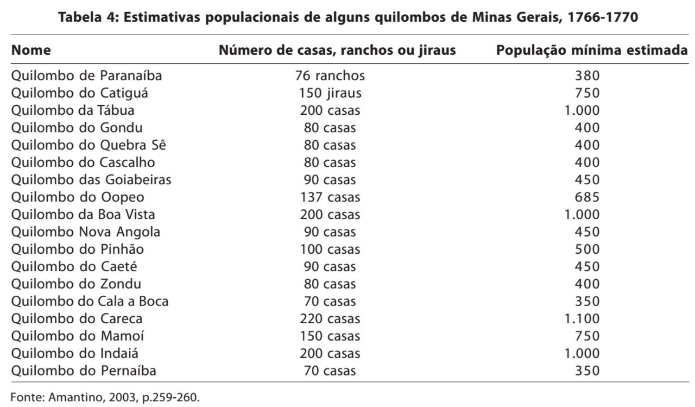
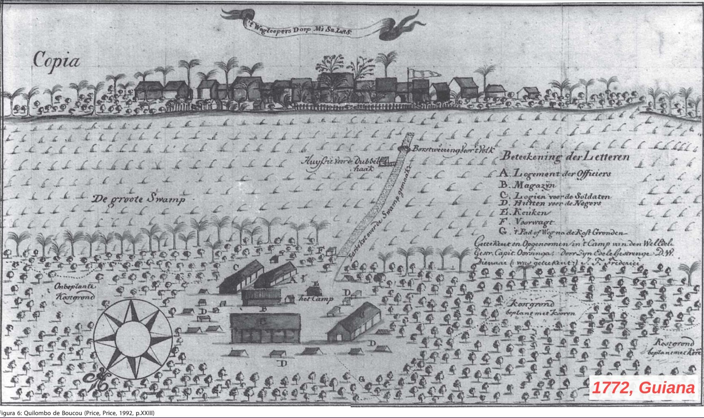
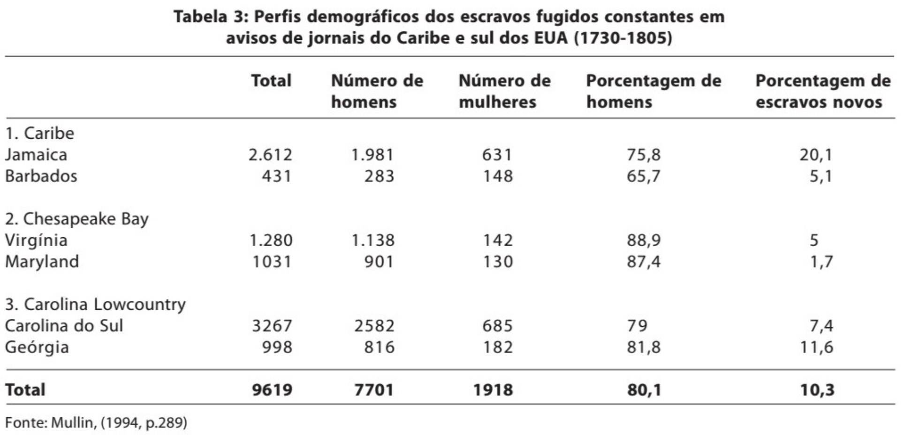

Aula 13
Aula 13CCLHM0076 · História da América
Lutas contra o cativeiro, lutas pela liberdade — parte 1
Aula 13CCLHM0076 · História da América
Acesse a apresentação
Abra os slides no celular e acompanhe no seu ritmo.
Aula 13Módulo III · Escravidão africana nas Américas
Lutas contra o cativeiro, lutas pela liberdade — parte 1
- Como um escravizado resiste?
- Quais as variações no tempo e no espaço?
- Como estudar e pesquisar? Que fontes?
Aula 13Módulo III · Escravidão africana nas Américas
Historiografia
Aula 13Módulo III · Escravidão africana nas Américas
A periodização da historiografia
- Três momentos marcados por rupturas teórico-metodológicas e interpretativas (Palermo, 2017)
- 1ª fase: Gilberto Freyre e Casa-Grande & Senzala (1933) — marco inicial dos estudos sobre escravidão no Brasil
- 2ª fase: Escola Paulista de Sociologia (1950-1970) — Florestan Fernandes, FHC, Ianni, Viotti da Costa
Aula 13Módulo III · Escravidão africana nas Américas
A periodização da historiografia
- 3ª fase: renovação pós-1980 — influência de E. P. Thompson, valorização da agência escrava
- Cada tendência constitui uma "tradição eletiva": construída a partir do presente e de expectativas de futuro (Palermo, 2017)
Aula 13Módulo III · Escravidão africana nas Américas
Freyre e os "antagonismos em equilíbrio"
- Casa-Grande & Senzala (1933) rompe com teses racistas de Paulo Prado, Oliveira Vianna e Nina Rodrigues
- Apoio na antropologia cultural de Franz Boas: valoriza a cultura africana na formação do Brasil
- Conceito de "antagonismos em equilíbrio": relações oscilam entre aproximação e afastamento
Aula 13Módulo III · Escravidão africana nas Américas
Freyre e os "antagonismos em equilíbrio"
- Ênfase na "história íntima da casa-grande" e nas relações entre senhores e escravos
- "Não caiu na armadilha do determinismo racial" (Schwartz, 2001)
Aula 13Módulo III · Escravidão africana nas Américas
Limites da interpretação freyreana
- Freyre valoriza mais a aproximação entre senhores e escravos do que as dissensões
- Deixa de problematizar "o caráter subalterno pelo qual os africanos entravam na sociedade brasileira" (Palermo, 2017)
- Difunde o "mito da doçura nas relações entre senhores e escravos" (Queiroz, 1987)
Aula 13Módulo III · Escravidão africana nas Américas
Limites da interpretação freyreana
- Castigo ao escravo descrito como "sistema de educação, de assimilação e de disciplina — o patriarcal" (Freyre, 1963)
- Em palestras nos EUA (1940), descreve "o idílico cenário da democracia racial brasileira" (Chalhoub & Silva, 2009)
Aula 13Módulo III · Escravidão africana nas Américas
Escola Paulista: marxismo e vitimização
- Florestan Fernandes, FHC, Ianni, Viotti da Costa — influenciados por Caio Prado Júnior
- Rivalizam com o paradigma freyreano, propõem nova "tradição eletiva" (Palermo, 2017)
- Escravidão como "pedra basilar no processo de acumulação do capital" (Queiróz, 1998)
Aula 13Módulo III · Escravidão africana nas Américas
Escola Paulista: marxismo e vitimização
- Ênfase na violência, coerção e repressão como formas de controle social
- Contudo: "excessiva generalização reducionista" que não captou a complexidade das relações (Palermo, 2017)
Aula 13Módulo III · Escravidão africana nas Américas
Cardoso e Ianni: estrutura e "falsa consciência"
- Cardoso (1962): infraestrutura econômica condiciona comportamento e consciência dos indivíduos
- No escravo é criada a "falsa consciência social" — alienação em relação ao processo produtivo
- Ianni (1962): escravos e senhores em polos diametralmente opostos, "remotas possibilidades de inter-relação"
Aula 13Módulo III · Escravidão africana nas Américas
Cardoso e Ianni: estrutura e "falsa consciência"
- Escravos como "mercadoria"; posição jurídico-social equivaleria a "uma coisa"
- Marca racial permanece mesmo após a alforria: as "metamorfoses do escravo"
Aula 13Módulo III · Escravidão africana nas Américas
O escravo como "coisa"
- Cardoso: "o escravo se apresentava, enquanto ser humano tornado coisa" (apud Chalhoub & Silva, 2009)
- Generalizações sobre os modos de pensar dos escravos baseadas em "leitura perfunctória das fontes" (Chalhoub & Silva, 2009)
- "Interpretação estruturalista" que não capta a complexidade das relações (Schwartz, 2001)
Aula 13Módulo III · Escravidão africana nas Américas
O escravo como "coisa"
- Ação social dos negros considerada como a de "semoventes" (Palermo, 2017)
- Ponto positivo: vinculação necessária da escravidão brasileira ao capitalismo mundial
Aula 13Módulo III · Escravidão africana nas Américas
A renovação pós-1980: Thompson e a agência
- Pesquisadores passam a "reler as fontes" sob novo aparato teórico-metodológico (Palermo, 2017)
- Influência de E. P. Thompson: "A história real revelar-se-á somente depois de pesquisa muito árdua"
- "Costumes em comum" formatam a experiência dos escravos e a arena da luta de classes (Chalhoub & Silva, 2009)
Aula 13Módulo III · Escravidão africana nas Américas
A renovação pós-1980: Thompson e a agência
- Visões escravas impõem "limites claros ao poder senhorial — ao mesmo tempo em que ajudam a reproduzi-lo"
- Transição do "paradigma da ausência" para o "paradigma da agência" (Chalhoub & Silva, 2009)
Aula 13Módulo III · Escravidão africana nas Américas
Cultura legal e "campo de força comum"
- Escravos demandam liberdade na justiça, obtendo-a à revelia da vontade senhorial
- Leis de emancipação gradual: ambiguidades que abriam brechas para conflito social
- Estado escravista como espaço contraditório, não como sujeito unívoco
Aula 13Módulo III · Escravidão africana nas Américas
Cultura legal e "campo de força comum"
- Questões centrais: compra e venda, castigo físico, alforria, direito à família e comunidade
- Paralelo: escravos e a lei de 1871 ↔ trabalhadores e a Justiça do Trabalho
Aula 13Módulo III · Escravidão africana nas Américas
Queiroz e o risco de "retorno ao patriarcalismo"
- Queiroz (1998) critica a nova historiografia por promover "um retorno ao 'patriarcalismo' freyreano"
- Preocupação com a "excessiva aproximação" entre escravo e senhor (visão integracionista)
- Nova fase valorizaria "um caráter consensual que nega a coisificação dos cativos" (Queiróz, 1998)
Aula 13Módulo III · Escravidão africana nas Américas
Queiroz e o risco de "retorno ao patriarcalismo"
- Crítica ao deslocamento da noção de violência no cativeiro
- Queiroz propõe "mais cuidados em relação à expressividade da família escrava estável no Brasil"
Aula 13Módulo III · Escravidão africana nas Américas
Marquese e o capitalismo histórico
- Marquese (2013) reconhece o mérito da historiografia pós-1980 em "colocar os escravos em cena"
- Mas critica a negligência com o conceito de capitalismo histórico
- Perda da oportunidade de compreender a escravidão brasileira "em suas articulações com o capitalismo global"
Aula 13Módulo III · Escravidão africana nas Américas
Marquese e o capitalismo histórico
- Ênfase excessiva em explicações endógenas, sem diálogo com a "economia-mundo industrial"
- Proposta: recolocar o capitalismo histórico como referência, sem o determinismo da Escola Paulista
Aula 13Módulo III · Escravidão africana nas Américas
Rebeldia escrava: tipologia
- Individual: suicídio, aborto, assassinato de senhores, automutilação, fuga
- Coletiva: quilombos, insurreições, revoltas urbanas
- Fuga como protesto mais comum; podia levar à formação de quilombos
Aula 13Módulo III · Escravidão africana nas Américas
Rebeldia escrava: tipologia
- Quilombos: "nascem espontaneamente", buscam paz, usam violência para sobreviver
- Revolta dos Malês (1835, Bahia): "o levante de escravos urbanos mais sério ocorrido nas Américas" (Reis, 1986)
Aula 13Módulo III · Escravidão africana nas Américas
Tradições eletivas: síntese
- Cada tendência dialogou fortemente com seu contexto e propôs "a fundação de novas tradições" (Palermo, 2017)
- O campo é marcado por "contendas políticas, ideológicas e epistemológicas"
- Freyre → Escola Paulista → renovação pós-1980: não são etapas superadas, mas tradições em disputa
Aula 13Módulo III · Escravidão africana nas Américas
Formas de Resistência
Aula 13Módulo III · Escravidão africana nas Américas
Fugas · Quilombos · Revoltas
Baseado em Florentino & Amantino (2012)
Aula 13Módulo III · Escravidão africana nas Américas
A fuga como ataque à propriedade privada
- O escravo era juridicamente uma mercadoria/propriedade: venda, compra, herança, penhor (p. 261)
- O primeiro ato humano do escravo, na lei, é o crime — roubo, assassinato, fuga e formação de quilombos (p. 261-262)
Aula 13Módulo III · Escravidão africana nas Américas
A fuga como ataque à propriedade privada
- As evasões "representavam atitudes do escravo que o humanizavam" na lei escravocrata (p. 262)
- A fuga era um ataque frontal ao direito de propriedade, expondo os limites do domínio privado do senhor (p. 261-262)
Aula 13Módulo III · Escravidão africana nas Américas
Fugas-reivindicatórias vs. fugas-rompimento
- Fugas-rompimento (grand marronage): evasões definitivas; menos de 1% dos escravos arrolados em inventários (p. 262-263)
- Fugas-reivindicatórias (petit marronage): ausências temporárias, muito mais frequentes; objetivo de obter pequenas conquistas e alargar a autonomia (p. 263)
Aula 13Módulo III · Escravidão africana nas Américas
Fugas-reivindicatórias vs. fugas-rompimento
- Leis coloniais francesas e espanholas prescreviam punições distintas para cada tipo (p. 263)
- A maior parte dos fugitivos retornava a seus donos, por vontade própria ou recaptura (p. 264)
Aula 13Módulo III · Escravidão africana nas Américas
Perfil dos fugitivos
- Adultos do sexo masculino predominavam: 3/4 nas fugas-rompimento, 4/5 nas fugas-reivindicatórias (p. 268)
- Forte presença de africanos: de 5 a 10 africanos para cada crioulo nas fugas-reivindicatórias (p. 268)
Aula 13Módulo III · Escravidão africana nas Américas
Perfil dos fugitivos
- Congos e angolanos predominavam no Sudeste; também oriundos de Moçambique e crioulos do Nordeste e Sul (p. 268-269)
- Crianças entre 10 e 14 anos alcançavam 1/3 de todos os fugitivos e 45% dos africanos evadidos (p. 269)
Aula 13Módulo III · Escravidão africana nas Américas
Boçais, tráfico e alforrias
- "Todo recém-chegado da África é um cimarrón de fato ou potencialmente" (p. 266, cit. Casimir)
- Boçais representavam 20 a 30% dos fugitivos denunciados nos jornais do Rio de Janeiro (p. 266)
Aula 13Módulo III · Escravidão africana nas Américas
Boçais, tráfico e alforrias
- Nas regiões mais dependentes do tráfico, o peso dos boçais entre fugitivos era três vezes maior (p. 267)
- A frequência de evasões era tanto maior quanto menor fosse a incidência de alforrias (p. 267-268)
Aula 13Módulo III · Escravidão africana nas Américas
Fugas maciças e a baixa frequência
- Em situações extraordinárias, os índices de fuga podiam ser muito maiores: invasões holandesas na Española (1626), inglesas na Jamaica (séc. XVII) (p. 265)
- Em condições normais, no máximo 10 em cada 100 escravos envolviam-se em fugas; menos de 1 lograva abandonar definitivamente o cativeiro (p. 265)
Aula 13Módulo III · Escravidão africana nas Américas
Fugas maciças e a baixa frequência
- Menos de 3% dos inventários post-mortem do Rio de Janeiro e Taubaté registravam escravos fugidos (p. 262)
- A baixa frequência resultava do controle social, da aculturação e da afirmação de uma cultura escrava de feição camponesa ou protocamponesa (p. 265)
Aula 13Módulo III · Escravidão africana nas Américas
Redes de sociabilidade nas fugas
- Alguns fugitivos recebiam ajuda de escravos e livres que os escondiam e empregavam (p. 269)
- Fugas-rompimento em pequenos grupos sugeriam planejamento, com definição de destino e amparo logístico (p. 268)
Aula 13Módulo III · Escravidão africana nas Américas
Redes de sociabilidade nas fugas
- Na maioria das vezes, porém, a evasão não se amparava em redes sólidas ou muito amplas (p. 269)
- A família escrava operava como forte mecanismo de estabilização social: poucos escravos aparentados deixavam o cativeiro definitivamente (p. 269-270)
Aula 13Módulo III · Escravidão africana nas Américas
Quilombos, Palenques, Cimarrones, Maroons
Aula 13Módulo III · Escravidão africana nas Américas
Variedade e diversidade
- Múltiplos termos nas Américas: quilombos (Brasil), palenques (América espanhola), cumbes, mainels, maroons (EUA/Caribe inglês) (p. 269)
- Enorme variação: de menos de 10 fugitivos (durando semanas) a 11 mil em Palmares (quase um século) (p. 259)
Aula 13Módulo III · Escravidão africana nas Américas
Variedade e diversidade
- Só em Nueva Granada: mais de meia centena de palenques entre os séculos XVI e XVIII (p. 270)
- Em Minas Gerais: pelo menos 166 quilombos entre 1711 e 1795 (p. 270)
Aula 13Módulo III · Escravidão africana nas Américas
A horda quilombola
- A maioria dos quilombos eram hordas: ajuntamentos baseados na adesão, não em saldos entre natalidade e mortalidade (p. 272)
- Economia fundada em coleta, caça e roubos — não na agricultura — resultando em nomadismo (p. 272)
- Grupos geralmente inferiores a dez pessoas, unidos em torno de objetivos imediatos (alimentos e proteção) (p. 272)
Aula 13Módulo III · Escravidão africana nas Américas
A horda quilombola
- Posição defensiva: refúgio em zonas de geografia difícil, risco constante de desaparição (p. 272-273)
- Boa parte dos recém-evadidos optava por integrar-se a assentamentos preexistentes (p. 272)
Aula 13Módulo III · Escravidão africana nas Américas
Características geográficas e defensivas
- Refúgio em bosques e regiões pantanosas — proteção e recursos naturais (p. 270)
- Defesas: armadilhas, fossos, estrepes, trincheiras, paliçadas (p. 285-287)
Aula 13Módulo III · Escravidão africana nas Américas
Características geográficas e defensivas
- Sistemas de origem africana (armadilhas cobertas e estacas pontiagudas) encontrados em Palmares, Buraco do Tatu e outros (p. 286)
- Quilombo do Ambrózio: fosso de 1,5-2m de largura por 2-3m de profundidade circundando 90m × 70m (p. 287)
Aula 13Módulo III · Escravidão africana nas Américas
*Quilombo de São Gonçalo*, 1769, MG. Fonte: Amantino, 2003, p. 107

Aula 13Módulo III · Escravidão africana nas Américas
Economia e proto-campesinato
- A transição para comunidade camponesa exigia agricultura, pecuária e trocas (p. 272-273)
- Grandes quilombos combinavam campos, horticultura, capacidade de armazenamento e produção para exportação (p. 282-283)
- Exemplos: cana e cachaça (Moquim, RJ); algodão, milho, feijão, mandioca (Minas Gerais); cacau, tabaco (Esmeraldas) (p. 282-283)
Aula 13Módulo III · Escravidão africana nas Américas
Economia e proto-campesinato
- Excedentes comercializados em mercados e armazéns locais (p. 283-284)
- Divisão social do trabalho: ferreiros, artífices, tecelões (p. 283)
Aula 13Módulo III · Escravidão africana nas Américas
Organização interna e hierarquias
- Hierarquização baseada no princípio da anterioridade: os mais antigos administravam o mercado matrimonial e a distribuição de terras (p. 280-281)
- Reis, rainhas, capitães, tenentes, alferes e sargentos nomeavam-se entre os quilombolas (p. 288-290)
- Instituições políticas: "Casas de Audiência", "Casa do Conselho", "Casa do Rei" (p. 288)
Aula 13Módulo III · Escravidão africana nas Américas
Organização interna e hierarquias
- Lideranças combinavam funções religiosas e políticas: Nanny (Jamaica), Macandal (Saint Domingue), Ventura Sanchez (Cuba) (p. 289-290)
- Havia escravidão interna: em Palmares, cativos raptados mantinham seu status (p. 291)
Aula 13Módulo III · Escravidão africana nas Américas
Relações com a sociedade de plantation
- Comércio: pequenos armazéns e vendas comercializavam excedentes — "cada venda é um quilombo" (Câmara de Vila Rica, 1754) (p. 274)
- Alianças: quilombolas do Barba Negra (RS) trabalhavam para estancieiros, que os alertavam sobre expedições (p. 285)
Aula 13Módulo III · Escravidão africana nas Américas
Relações com a sociedade de plantation
- Guerra: ataques a fazendas para raptar escravos e escravas — "destruindo tudo, pondo em miserável estado" (p. 286)
- Tratados de paz: Colômbia, México, Jamaica, Suriname — reconhecimento de liberdade e território em troca de devolução de novos fugitivos (p. 276-278)
Aula 13Módulo III · Escravidão africana nas Américas
Redes com indígenas
- Desde 1503: africanos refugiados entre os tainos de La Española (p. 275)
- Cooperação em Cuba (1529), Nicarágua (1540), Panamá (1546-1550) (p. 275)
- Comunidades mestiças: Palmares tinha 20% de população ameríndia (1644); quilombo do Piolho (MT) — 79 negros, 30 indígenas, famílias com mulheres índias (p. 276-277)
Aula 13Módulo III · Escravidão africana nas Américas
Redes com indígenas
- Mas indígenas também serviam como forças repressoras: tapuias ajudaram a destruir Palmares (p. 275)
- Quando aliados às autoridades, indígenas rejeitavam contatos e devolviam fugitivos (p. 275-276)
Aula 13Módulo III · Escravidão africana nas Américas
Gênero e comunidade cimarrona
- Crônico deficit de mulheres negras nos quilombos — homens raptavam mulheres indígenas para constituir famílias (p. 276-277)
- No Mato Grosso (1770-1795): capturados 6 negros idosos, 8 índios, 19 índias e 21 caburés — preferência pela permanência de mulheres indígenas (p. 276)
- Em comunidades camponesas consolidadas, famílias nucleares eram o eixo da organização (p. 280-281)
Aula 13Módulo III · Escravidão africana nas Américas
Gênero e comunidade cimarrona
- No santuário de Mose (Flórida, 1759): ¼ da população tinha menos de 15 anos, todos nascidos no local; 13 de 22 casas habitadas por famílias nucleares (p. 280)
- Nanny: liderança feminina na Jamaica, combinava funções religiosas e políticas (p. 289)
Aula 13Módulo III · Escravidão africana nas Américas
Quilombos no Brasil: o caso de Minas Gerais
- Pelo menos 166 quilombos entre 1711-1795 (p. 270)
- População média dos grandes quilombos: ~600 habitantes (p. 280)
- Agricultura diversificada: milho, feijão, algodão, cana, mandioca; criação de gado (p. 282-283)
Aula 13Módulo III · Escravidão africana nas Américas
Quilombos no Brasil: o caso de Minas Gerais
- Defesas sofisticadas: fossos, trincheiras, fortificações (p. 285-287)
- Quilombo do Bacaxá (RJ): mais de 60 pessoas, todos nascidos no quilombo, "em parte de suas roças e, em parte, de furtos" (p. 278)
Aula 13Módulo III · Escravidão africana nas Américas
Tabela 4: Estimativas populacionais de alguns quilombos de Minas Gerais, 1766-1770. Fonte: Amantino, 2003, p. 259-260

Aula 13Módulo III · Escravidão africana nas Américas
Comparações hemisféricas
- Brasil e Caribe: fugas e quilombos mais frequentes que na América espanhola continental e sul dos EUA (p. 266)
- Sul dos EUA: quilombos congregavam menores contingentes e obtinham menores êxitos (p. 266)
- Suriname e Jamaica: casos raros onde quilombolas estabeleceram tratados e descendentes sobrevivem até hoje (p. 271)
Aula 13Módulo III · Escravidão africana nas Américas
Comparações hemisféricas
- Palmares (Brasil, séc. XVII): 11 mil habitantes, federação de dez assentamentos — o maior quilombo das Américas (p. 259, 279)
- O século XVIII foi a "época áurea das fugas" no continente (2/3 de todas as viagens negreiras) (p. 266)
Aula 13Módulo III · Escravidão africana nas Américas
Figura 6: Quilombo de Boucou (Price, 1992, p. XXIII)

Aula 13Módulo III · Escravidão africana nas Américas
Quilombos: considerações finais
- Os quilombos não estavam radicalmente isolados da sociedade escravista (p. 293)
- As comunidades locais relacionavam-se com eles de modo desigual — nem todo quilombo era uma "contrassociedade" (p. 279)
- Havia quilombos que acolhiam brancos e mulatos livres pobres, além de indígenas (p. 279)
Aula 13Módulo III · Escravidão africana nas Américas
Tabela 3: Perfis demográficos dos escravos fugidos constantes em avisos de jornais do Caribe e sul dos EUA (1730-1805). Fonte: Mullin, 1994, p. 289

Aula 13Módulo III · Escravidão africana nas Américas
Revoltas, Rebeliões e Revolução
Aula 13Módulo III · Escravidão africana nas Américas
Tipologia da Resistência Escrava
- Conspirações: complôs abortados, difíceis de autenticar — dependem de testemunhos obtidos sob coação (Geggus 2011, p. 24)
- Revoltas abertas: escravos como participantes mais importantes; deixam evidências materiais (mortes, destruição)
Aula 13Módulo III · Escravidão africana nas Américas
Tipologia da Resistência Escrava
- Guerras maroons: insurgentes "nasceram livres" — não se confundem com rebelião escrava (Geggus 2011, p. 24)
- Conflitos multiclassistas: envolvem escravos mas são dominados por pardos livres ou Caribes negros (Granada, São Vicente, 1795)
Aula 13Módulo III · Escravidão africana nas Américas
O "Enigma da Jamaica" nos 1790s
- Jamaica possuía "um impressionante histórico de resistência violenta do século XVII até a década de 1830" (Geggus 1987, p. 274)
- Paradoxo: durante a Era das Revoluções, quando São Domingos viveu a maior revolta escrava, as colônias britânicas atingiram seu nível mais baixo de rebeliões (p. 274)
- Jamaica permaneceu "quiescente" nos anos 1790, apesar de todas as condições objetivas favoráveis à insurreição (p. 275)
Aula 13Módulo III · Escravidão africana nas Américas
Reações Iniciais a São Domingos
- Escravos jamaicanos estavam bem informados: já em setembro de 1791 cantavam canções sobre a revolta (Geggus 1987, p. 276)
- Levante planejado para o Natal de 1791 no norte da ilha; escravo coromantee confessou que pretendia participar "porque eles eram seu povo" (p. 277)
- Nada aconteceu — a milícia com mais de 8.000 homens, somada à guarnição regular e aos maroons, fez "potenciais rebeldes pensarem duas vezes" (p. 277)
Aula 13Módulo III · Escravidão africana nas Américas
Segunda Guerra Maroon (1795) — Causas
- Conflito com Trelawny Town (600 habitantes) — julho de 1795 a março de 1796 (Geggus 1987, p. 279)
- Causas locais, não francesas: escassez de terras, insatisfação com o superintendente, aplicação frouxa das leis (p. 280)
Aula 13Módulo III · Escravidão africana nas Américas
Segunda Guerra Maroon (1795) — Causas
- Estopim: dois maroons açoitados publicamente na workhouse por um escravo fugido que eles próprios haviam capturado — "ser punido como escravos foi percebido... como profundamente insultante" (p. 280)
- Geggus refuta influência francesa: "o caso para um envolvimento estrangeiro mínimo simplesmente desaparece" (p. 282)
Aula 13Módulo III · Escravidão africana nas Américas
Tese do Fator Militar
- "A estabilidade de uma sociedade escravista era determinada menos pelas ideias circulando nas senzalas do que pela força e unidade da classe senhorial" (Geggus 1987, p. 278)
- Guarnição jamaicana reforçada durante a Guerra de Independência Americana e expandida nas guerras revolucionárias francesas
Aula 13Módulo III · Escravidão africana nas Américas
Tese do Fator Militar
- Quando a revolta de São Domingos eclodiu, "já havia mais soldados na Jamaica do que jamais em tempos de paz" (p. 293)
- Correlação consistente entre redução de tropas e eclosão de rebeliões: Barbados (1816), Demerara (1823), Jamaica (1831) (p. 294-299)
Aula 13Módulo III · Escravidão africana nas Américas
Rebeliões na Era das Revoluções — Censo Hemisférico
- Levantamento de aproximadamente 180 incidentes entre 1776-1848 — "uma amostragem limitada de fontes limitadas" (Geggus 2011, p. 25)
- Sub-representa Brasil e Cuba; a década de 1790 se destaca como pico de intensidade
Aula 13Módulo III · Escravidão africana nas Américas
Rebeliões na Era das Revoluções — Censo Hemisférico
- O ano de 1795 é "único pelo número de incidentes separados em diferentes sociedades" (p. 23)
- Caribe concentra as maiores revoltas: 8 ou 9 rebeliões envolveram pelo menos 1.000 escravos; nenhuma rebelião continental ultrapassou esse número (p. 25)
Aula 13Módulo III · Escravidão africana nas Américas
Impacto das Três Revoluções Atlânticas
- Revolução Americana: menor impacto direto; milhares de escravos escaparam; possível influência na "cultura de expectativa" (Geggus 2011, p. 28-29)
- Revolução Francesa: enfraquecimento material dos regimes escravistas — guerra civil entre brancos e pardos, divisões na classe dominante (p. 30)
Aula 13Módulo III · Escravidão africana nas Américas
Impacto das Três Revoluções Atlânticas
- Revolução Haitiana: raramente envolveu assistência direta — política de Toussaint foi de "uma revolução em um só país" (p. 31)
- Circulação de notícias e inspiração simbólica: escravos em Havana, Barbados, Porto Rico e Curaçao mencionavam São Domingos (p. 33-34)
Aula 13Módulo III · Escravidão africana nas Américas
Crítica a Genovese: direitos vs. rumores
- Genovese: Revolução Francesa teria gerado "novo tipo" de insurreição, buscando "liberdade para todos e engajamento com o mundo mais amplo" (Geggus 2011, p. 27)
- Geggus: "a principal fraqueza dessa tese é que Genovese não conseguiu fornecer exemplos plausíveis" além da Revolução Haitiana e da rebelião de Coro (p. 27)
Aula 13Módulo III · Escravidão africana nas Américas
Crítica a Genovese: direitos vs. rumores
- Insurgentes no Caribe francês raramente empregavam linguagem de direitos; alegavam que já haviam sido libertados pelo rei ou pela Assembleia Nacional (p. 30)
- "A evidência de que escravos usaram o termo 'direitos do homem' é na verdade bastante limitada" (p. 30)
Aula 13Módulo III · Escravidão africana nas Américas
Abolicionismo e Rumores de Emancipação
- Movimento abolicionista gerou ciclo de revoltas baseadas em rumores de emancipação oficial — mais de 20 incidentes entre 1789 e início dos anos 1830 (Geggus 2011, p. 35)
- "Tais rumores talvez ressoassem mais fortemente entre os escravizados do que o conceito de direitos abstratos" (p. 35)
- Insurgentes em Barbados (1816), Demerara (1823) e Jamaica (1831) exigiam aplicação de uma lei de abolição que (erroneamente) acreditavam ter sido aprovada
Aula 13Módulo III · Escravidão africana nas Américas
Demografia, Tráfico e Rebelião
- População escrava nas Américas: de 3 milhões em 1790 para o dobro em meio século — parte da explicação, mas insuficiente (Geggus 2011, p. 26)
- Correlação forte entre tráfico e rebelião em algumas regiões (Bahia, Brasil Central, Cuba), mas fraca nas colônias britânicas
Aula 13Módulo III · Escravidão africana nas Américas
Demografia, Tráfico e Rebelião
- As três "tardias" rebeliões britânicas — Barbados (1816), Demerara (1823), Jamaica (1831) — "solapam seriamente qualquer tentativa de correlacionar rebelião escrava com presença africana" (p. 26)
- Revolta de São Domingos eclodiu "na parte mais crioulizada da colônia e foi liderada largamente por escravos nascidos localmente" (p. 26)
Aula 13Módulo III · Escravidão africana nas Américas
Síntese: Conspirações, Condições Locais e Agência Escrava
- Geggus (2011): insurreições eram "mais racionalmente calculadas, menos desesperadas do que muitas vezes pareceram" (p. 299)
- Em todos os textos: agência escrava como escolha racional condicionada por estruturas de poder — demografia, economia, presença militar e circulação de notícias
Aula 13Módulo III · Escravidão africana nas Américas
Bibliografia
Aula 13Módulo III · Escravidão africana nas Américas
Historiografia
- PALERMO, Luis Claudio. Disputas no campo da historiografia da escravidão brasileira: perspectivas clássicas e debates atuais. Dimensões, v. 39, p. 324-347, 2017.
- QUEIROZ, Suely Robles Reis de. Rebeldia escrava e historiografia. Estudos Econômicos (São Paulo), v. 17, n. Especial, p. 07–35, 1987.
Aula 13Módulo III · Escravidão africana nas Américas
Historiografia
- CHALHOUB, Sidney; SILVA, Fernando Teixeira da. Sujeitos no imaginário acadêmico: escravos e trabalhadores na historiografia brasileira desde os anos 1980. Cadernos AEL, v. 14, n. 26, 2009.
Aula 13Módulo III · Escravidão africana nas Américas
Formas de resistência
- FLORENTINO, Manolo; AMANTINO, Márcia. Uma morfologia dos quilombos nas Américas, séculos XVI-XIX. História, Ciências, Saúde — Manguinhos, Rio de Janeiro, v. 19, supl., p. 259-297, dez. 2012.
- MULLIN, Michael. Africa in America: Slave Acculturation and Resistance in the American South and the British Caribbean, 1736-1831. Urbana: University of Illinois Press, 1994.
Aula 13Módulo III · Escravidão africana nas Américas
Formas de resistência
- ARANA, Paola Vargas. Balanço historiográfico sobre as insurgências de africanos(as) e afrodescendentes contra a escravidão em América. Anais eletrônicos da XII Jornada de Estudos Históricos Professor Manoel Salgado, PPGHIS-UFRJ, v. 3, p. 657-678, 2017.
Aula 13Módulo III · Escravidão africana nas Américas
Rebeliões Escravas
- GASPAR, David Barry. The Antigua Slave Conspiracy of 1736: A Case Study of the Origins of Collective Resistance. The William and Mary Quarterly, v. 35, n. 2, p. 308–323, abr. 1978.
- GEGGUS, David. The Enigma of Jamaica in the 1790s: New Light on the Causes of Slave Rebellions. The William and Mary Quarterly, v. 44, n. 2, p. 274–299, 1987.
Aula 13Módulo III · Escravidão africana nas Américas
Rebeliões Escravas
- GEGGUS, David. Slave rebellion during the Age of Revolution. In: KLOOSTER, Wim; OOSTINDIE, Geert (Orgs.). Curaçao in the Age of Revolutions, 1795-1800. Leiden: BRILL, 2011.
1/93
← → navegar · Home/End